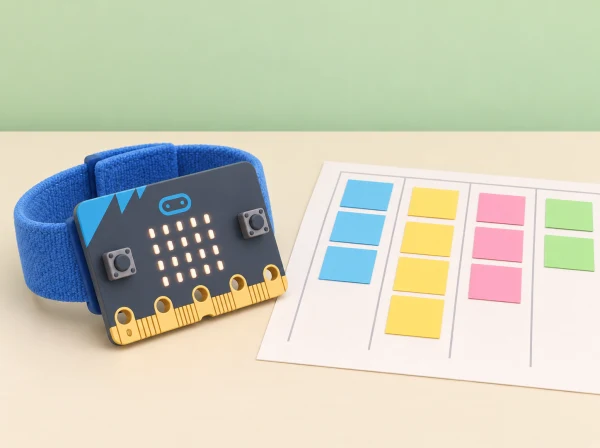

Moviment cooperatiu i dades
🏷️ Joc, dades i benestar
🌱 Situació, repte i intenció
🎯 Aprenentatges i vocabulari
- Descriure una activitat amb variables observables sense convertir-les en puntuacions sobre persones.
- Programar un comptador o selector amb entrades, variables, condicions i valors de prova.
- Comprovar que l’atzar i les regles ofereixen opcions diverses i no exclouen una forma de participar.
- Proposar alternatives de moviment voluntari, pausa o participació sense moviment.
🧰 Materials i preparació
BBC micro:bit, MakeCode, targetes d’activitat i registre de proves sense noms. Verifiqueu que l’acceleròmetre i els blocs que utilitzeu són compatibles amb la versió disponible. El comptatge pot fer-se amb el botó si sacsejar la placa no és accessible o adequat.
📅 Seqüència didàctica
Descriure amb variables (Describing with variables)
Fase 1 · Activem i prediem
Presenteu targetes d’un personatge fictici del pati i predigueu quins valors poden canviar durant un joc: opció triada, torn o nombre de passos d’una fitxa. No useu noms ni dades de companys.
Fase 2 · Explorem i construïm
Representeu una variable amb una capsa que guarda un valor. Canvieu el valor del joc triat o del torn amb targetes i observeu com el canvi modifica les instruccions que cal seguir.
Fase 3 · Expliquem i registrem
Escriviu instruccions per actualitzar la variable i anoteu quin valor hi havia abans i quin queda després. Expliqueu què guarda cada variable i quin esdeveniment la modifica.
Fase 4 · Apliquem i millorem
Canvieu l’ordre d’una instrucció o el valor inicial i compareu el resultat. Reviseu l’algorisme si no queda clar qui l’actualitza o en quin moment.
Fase 5 · Comprovem i reflexionem
Una altra parella segueix l’algorisme amb targetes i comprova el valor resultant.
Comptar una activitat (Using variables in programs)
Fase 1 · Activem i prediem
Dissenyeu un comptador de salts d’una fitxa o, si la classe ho tria voluntàriament, de moviments suaus. Predigueu com es mostrarà el valor i què ha de passar quan s’inicia o es reinicia.
Fase 2 · Explorem i construïm
Useu l’acceleròmetre o el botó com a entrada i compareu les lectures amb un recompte manual. Identifiqueu quan la variable s’inicialitza, quin esdeveniment la modifica i com es mostra el resultat.
Fase 3 · Expliquem i registrem
Registreu entrada prevista, resultat del programa, diferència observada i explicació possible. Prepareu una versió amb un error intencionat de reinici o increment i predigueu quin resultat produirà.
Fase 4 · Apliquem i millorem
Localitzeu el bloc responsable, canvieu una sola cosa i repetiu la mateixa prova. El botó A pot substituir el moviment; no s’exigeix cap activitat física ni s’avalua el nombre obtingut.
Fase 5 · Comprovem i reflexionem
Compareu la versió inicial i la corregida i expliqueu què guarda la variable.
Un comptador de passos com a model (Programming step-counters)
Fase 1 · Activem i prediem
Predigueu quins moviments de la placa podria confondre el comptador amb passos i quins passos podrien passar desapercebuts. Expliqueu que és una prova d’un model, no un podòmetre validat.
Fase 2 · Explorem i construïm
Programeu un comptador activat pel moviment de la placa i proveu-lo al simulador o amb sacsejades suaus sobre una taula. Si l’alumnat ho tria, feu un recorregut curt en espai lliure, sense córrer ni competir; el botó i les fitxes són alternatives equivalents.
Fase 3 · Expliquem i registrem
Compareu tres recorreguts o seqüències amb observació manual, mantenint condicions consistents. Useu un registre anònim i anoteu falsos positius, moviments no comptats i diferències amb la fitxa manual.
Fase 4 · Apliquem i millorem
Reviseu un llindar o una condició i repetiu la mateixa prova controlada. L’objectiu és identificar limitacions del recompte, no ajustar-lo a una mesura corporal exacta.
Fase 5 · Comprovem i reflexionem
Expliqueu per què el programa pot confondre altres moviments amb passos i per què no mesura salut, intensitat ni capacitat física.
Propostes aleatòries (Random activities)
Fase 1 · Activem i prediem
Examineu un programa de preguntes matemàtiques amb nombres aleatoris i variables. Predigueu quins valors podrien eixir i quines opcions quedarien fora si els límits s’escriuen malament.
Fase 2 · Explorem i construïm
Redacteu amb targetes l’algorisme d’un selector de jocs: iniciar, triar un nombre, mostrar l’activitat associada, preguntar si s’accepta i oferir alternativa. Incloeu activitats equivalents com caminar una ruta curta, marcar un ritme, observar una forma o dirigir una seqüència.
Fase 3 · Expliquem i registrem
Reviseu que totes les opcions siguen visibles i que cap obligue a fer exercici. Anoteu si tenen durades o demandes diferents i per què l’atzar no garanteix per si sol l’equitat.
Fase 4 · Apliquem i millorem
Proveu els valors mínim i màxim i comproveu que cada activitat pot aparéixer. Afegiu una opció «tria una altra» o «passe» amb el mateix valor que qualsevol altra; una elecció manual equivalent sempre està disponible.
Fase 5 · Comprovem i reflexionem
Expliqueu qui controla la selecció i com pot rebutjar una proposta.
Programar i avaluar el selector (Programming an activity picker)
Fase 1 · Activem i prediem
Reviseu l’algorisme i predigueu quina activitat correspon als valors mínim i màxim. Comproveu que una alternativa o passar el torn apareix com a opció.
Fase 2 · Explorem i construïm
Implementeu el selector amb MakeCode, variables i nombres aleatoris. Associeu cada opció a una targeta i feu que la persona puga acceptar, triar-ne una altra o no participar.
Fase 3 · Expliquem i registrem
Proveu sistemàticament els límits i inspeccioneu la llista perquè cap opció quede exclosa. Registreu valors i resultats sense noms, perfils ni identificadors.
Fase 4 · Apliquem i millorem
Reviseu una condició incorrecta i torneu a provar-la. Afegiu o milloreu una alternativa sense moviment i expliqueu si el selector continua sent fàcil de modificar.
Fase 5 · Comprovem i reflexionem
Presenteu el programa i valoreu si és clar, inclusiu i controlat per qui l’usa. Esborreu les dades de prova en acabar.
Guia de prova per als comptadors
Per a les sessions 2 i 3, useu una taula amb quatre columnes: entrada prevista, resultat del programa, diferència observada i explicació possible. Proveu primer el programa amb el simulador o amb sacsejades suaus de la placa sobre una taula. Després, si l'alumnat ho tria, feu un recorregut curt en espai lliure, sense córrer ni competir. Compareu el comptador automàtic amb una seqüència controlada de moviments de la placa i el recompte manual d'una fitxa.
L'objectiu és trobar falsos positius i moviments que no compta, no ajustar el programa perquè coincidisca amb una mesura corporal exacta.
En el programa, identifiqueu explícitament quan la variable s'inicialitza, quin esdeveniment la modifica i com es mostra el valor. Prepareu una versió amb un error intencionat: el comptador suma dos, no es posa a zero a l'inici o mostra el valor abans d'actualitzar-se. L'equip prediu quin resultat produirà, localitza el bloc responsable i canvia una sola cosa. El registre és de proves del programa, sense nom ni identificador d'alumne, i s'esborra en acabar.
🧪 Evidències i avaluació
Guardeu exemples de variables, algorismes, dues versions del comptador, taula de proves, programa aleatori i revisió d’accessibilitat. Valoreu l’explicació del model, la depuració sistemàtica i la qualitat de les opcions; no puntueu velocitat, nombre de passos ni activitat física de cap persona.
Rúbrica breu i adaptacions
Valoreu quatre aspectes amb «encara no / amb suport / de manera autònoma»: identifica què guarda la variable; explica l'entrada que la canvia; localitza i corregeix un error amb proves; i justifica com el selector permet triar o passar. L'alumnat pot demostrar-ho amb targetes, pseudocodi, blocs o una explicació oral. Useu el botó A en lloc del moviment quan siga preferible, feu servir fitxes com a entrada simulada i permeteu participar com a dissenyador/a o observador/a.
No registreu informació sobre salut, capacitat o hàbits individuals.
♿ Participació, accessibilitat i seguretat
Abans de programar l'atzar, assegureu-vos que totes les opcions són igualment visibles i que cap resposta obliga a fer exercici. Una col·lecció equilibrada pot incloure una ruta de passos caminant, seguir un ritme amb les mans, observar i dibuixar una forma o dirigir la fitxa d'una parella. L'opció «tria una altra» o «passe» ha de tindre el mateix valor que qualsevol altra.
Si les activitats tenen durades o demandes diferents, no presenteu l'atzar com a garantia d'equitat: parleu de com es pot controlar la selecció i oferiu una elecció manual equivalent.
Representeu l'algorisme amb targetes: iniciar, triar un nombre, mostrar l'activitat associada, preguntar si la persona vol acceptar-la i oferir alternativa. Feu proves en què el nombre mínim i màxim apareguen, i reviseu si alguna opció queda exclosa per un límit mal escrit. Cada equip pot fer una inspecció sistemàtica de la llista en lloc d'esperar que l'atzar mostre totes les opcions.
♿ Benestar i privacitat
La participació física és voluntària i té alternatives equivalents. No es registren perfils, noms, condicions de salut ni historial; el dispositiu no mesura intensitat, capacitat física o calories. Delimiteu un espai segur i oferiu rols de disseny, programació, ritme, observació i direcció.
🔗 Referents i adaptació
Aquesta situació adapta les cinc lliçons de micro:bit Getting active: Describing with variables, Using variables in programs, Programming step-counters, Random activities i Programming an activity picker. La proposta concreta els mateixos objectius de variables, algoritmes, comptadors, aleatorietat, selecció i depuració en un menú de jocs cooperatius propi.